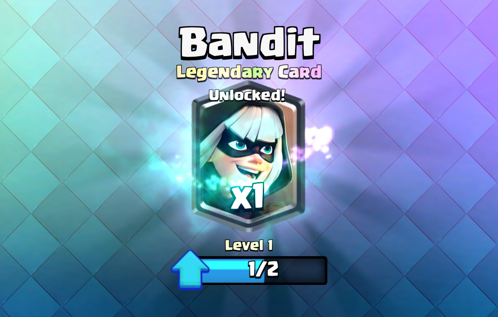
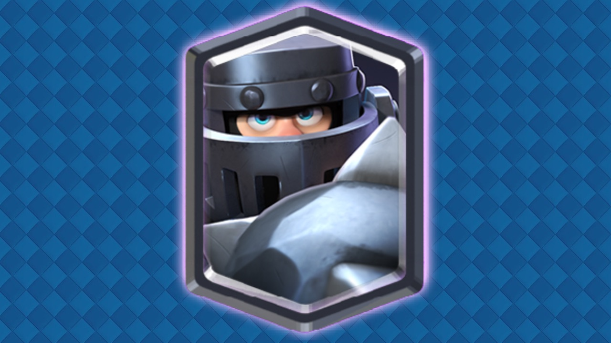

La Bandida es muy efectivo contra las unidades que se extienden, ya que su ataque rápido puede cubrir fácilmente la distancia entre las tropas y causar el doble de daño. Desde tu lado de la Arena, la Bandida puede lanzarse y atacar edificios como el Cañón o la Torre Infernal que están a 3 fichas del río. La Bandida funciona bien como un castigo barato o una carta de ataque de doble línea debido a que su mecánica de embestida la convierte en una amenaza inmediata. Ignorar por completo a una Bandida suele ser fatal, ya que reducirá la salud de la Torre de coronas por apenas encima del 50%. La embestida de la Bandida puede cruzar el río. Sabiendo esto, puede ser eficaz para eliminar tropas a distancia que se colocan cerca de ella. Su daño de embestida es suficiente para vencer a cualquier tropa terrestre que las Flechas puedan vencer, reduciendo la salud de algunas tropas como Mosquetera a la mitad, solo requiriendo dos ataques regulares más para derrotarlos por completo. Cuando haya una sola tropa que sea vencida por su embestida, entre el puente y la Torre de coronas, despliéguela para que embista a la tropa, luego corra hacia la torre. Esto le permite llegar a la torre más rápido mientras contrarresta a la tropa.
El Megacaballero tiene la habilidad especial de saltar hacia los objetivos para causar más daño, por lo que puede hacerle frente a la mayoría de las tropas del enemigo durante las partidas. La mecánica de salto del Mega Caballero no debe confundirse con la habilidad de la bandida. Su tiempo de carga es más lento y no lo hace invencible. Seguirá sufriendo daños mientras este en el aire y puede morir en el aire. El Mega Caballero es poderoso cuando se combina con otras unidades de alto daño como el Mini PEKKA o el Leñador, ya que absorberá el daño entrante y eliminará cualquier enjambre terrestre con su daño de área, y las otras tropas pueden ayudarlo a derrotar a las tropas de alto punto de golpe que puedan distraerlo. La Valquiria , Mini PEKKA, PEKKA, el leñador, el cañón con ruedas, los bárbaros, los bárbaros de élite , el caballero entre otras tropas pueden contrarrestar al Mega Caballero en defensa. El Príncipe puede sacar al Mega Caballero de tu lado si lo colocas lo suficientemente lejos del Mega Caballero para tener tiempo de desplegarse pero lo suficientemente cerca para que el Mega Caballero no tenga suficiente distancia para realizar un ataque de salto. Sin embargo, el Pescador puede contrarrestarlo usando su habilidad para atraer tropas. Si lo empujas entre las dos torres de la corona, morirá. Alternativamente, puedes dejar que el Príncipe descargue su carga, pero esto permite que el Mega Caballero salte, aunque el Príncipe lo eliminará de dos modos. Es mejor emparejarlo con otras tropas que pueden atacar el aire, como las Arqueras , el Mago o el Verdugo.
